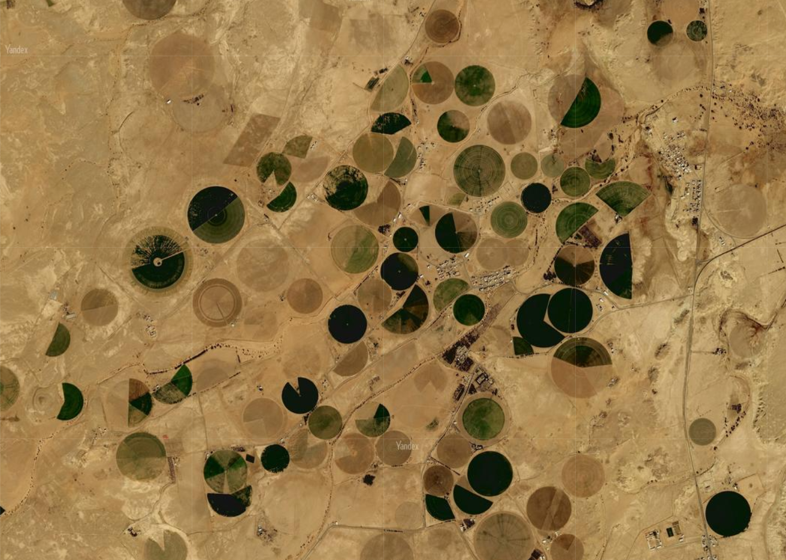
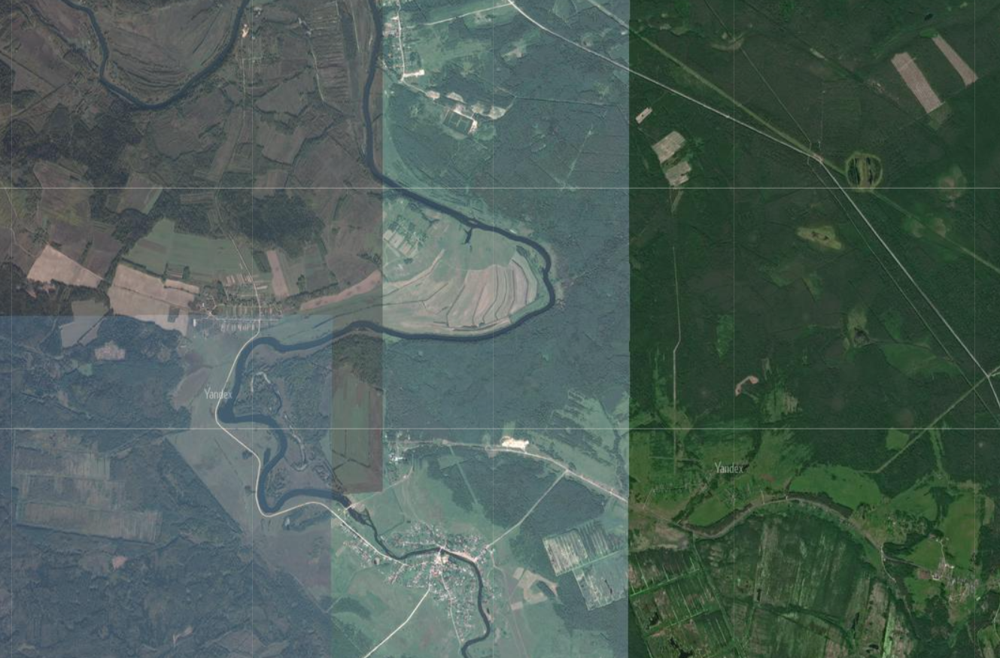
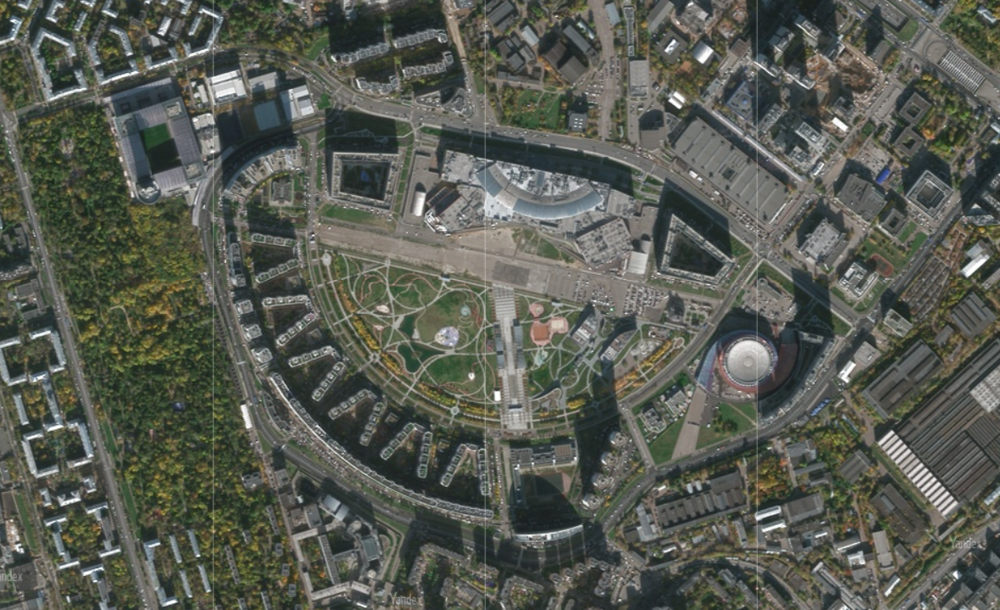

На этом сайте вы можете найти примеры использования прямых дешифровочных признаков на Яндекс картах. Далее коротко расскажем о том что такое дешифровочные признаки и что к ним относится.
Топографическое дешифрирование снимков – процесс обнаружения, распознавания и изображения в условных знаках тех видимых объектов местности, которые составляют основное содержание изучаемого участка местности. Помимо дешифровки объектов местности можно распознавать процессы и являения, однако по Яндекс картам такие исследования провести крайне затруднительно, поскольку для распознания процессов необходима серия снимков, а в данном ресурсе имеется возможность просмотра одного лишь слоя снимков с космоса, что не позволяет увидеть изменение процессов со временем. Явления также дешифрировать по Яндекс картам не получится, поскольку ресурс предоставляет все снимки в ясную или малооблачную погоду, а также стремится отобразить Земную поверхность в максимально спокойном состоянии, без проявлений тяжелых погодных условий, поскольку именно так достигается ниболее качественная картинка. Также, в данном источнике отсутствуют снимки крупного масштба на участки океана и малозаселённые территории, особенно ближе к полюсам, что также скажется на количестве объектов, которые можно онозначно дешифрировать.
К прямым дешифровочным признакам относят:
- Геометрические
- Яркостные
- Структурные
В свою очередь эти признаки имеют следующий состав:
Геометрические:
Яркостные:
| Дешифровочные признаки | Графическое отображение |
|---|---|
| Геометрические |  |
| Яркостные |  |
| Структурные |  |